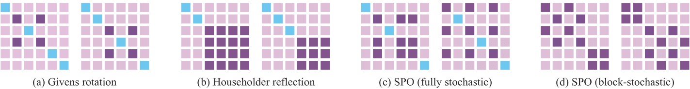

While Large language models (LLMs) are driving the rapid advancement of artificial intelligence, effectively and reliably training these large models remains one of the field's most significant challenges. To address this challenge, we propose POET, a novel reParameterized training algorithm that uses Orthogonal Equivalence Transformation to optimize neurons. Specifically, POET reparameterizes each neuron with two learnable orthogonal matrices and a fixed random weight matrix. Because of its provable preservation of spectral properties of weight matrices, POET can stably optimize the objective function with improved generalization. We further develop efficient approximations that make POET flexible and scalable for training large-scale neural networks. Extensive experiments validate the effectiveness and scalability of POET in training LLMs.
The de facto way for training LLMs is to directly optimize weight matrices with the Adam optimizer. While conceptually simple, this direct optimization can be computationally intensive (due to the poor scaling with model size) and requires careful hyperparameter tuning to ensure stable convergence. More importantly, its generalization can remain suboptimal even if the training loss is perfectly minimized. To stabilize training and enhance generalization, various weight regularization methods and weight normalization techniques have been proposed. Most of these methods boil down to improving spectral properties of weight matrices (i.e., singular values) either explicitly or implicitly. Intuitively, the spectral norm of a weight matrix (i.e., the largest singular value) provides an upper bound on how much a matrix can amplify the input vectors, which connects to the generalization properties. In general, smaller spectral norms (i.e., better smoothness) are considered to be associated with stronger generalization, which inspires explicit spectrum control. Theoretical results also suggest that weight matrices with bounded spectrum can provably guarantee generalization.
To achieve effective weight spectrum control without the limitations above, we propose POET, a reParameterized training algorithm that uses Orthogonal Equivalence Transformation to indirectly learn weight matrices. Specifically, POET reparameterizes a weight matrix \( \mathbf{W} \in \mathbb{R}^{m \times n} \) with \( \mathbf{R} \mathbf{W}_0 \mathbf{P} \) where \( \mathbf{W}_0 \in \mathbb{R}^{m \times n} \) is a randomly initialized weight matrix, \( \mathbf{R} \in \mathbb{R}^{m \times m} \) and \( \mathbf{P} \in \mathbb{R}^{n \times n} \) are two orthogonal matrices. Instead of optimizing weight matrices directly, POET keeps the randomly initialized weight matrix \( \mathbf{W}_0 \) unchanged during training and learns two orthogonal matrices \( \mathbf{R}, \mathbf{P} \) to transform \( \mathbf{W}_0 \). This reparameterization preserves the singular values of weights while allowing flexible optimization of the singular vectors.
Visualization of the weight update mechanism of POET-BS and POET-FS after 100 steps of update and \(T_m = 1\).
Our proposed POET has two key properties:
Step 1: Initialization. We initialize the weight matrices using normalized Gaussian: \( \mathbf{W} \leftarrow \mathbf{W}_0 \).
Step 2: Orthogonal matrix initialization. For fully stochastic SPO, we randomly sample an index set \( \mathbf{S} \), and parameterize \( \tilde{\mathbf{G}}_{R} \in \mathbb{R}^{b \times b} \) and \( \tilde{\mathbf{G}}_{P} \in \mathbb{R}^{b \times b} \) using CNP. Both matrices are initialized as identity, so \( \mathbf{R} \) and \( \mathbf{P} \) also start as identity matrices. For block-stochastic SPO, we sample a random permutation matrix \( \mathbf{\Psi}_R, \mathbf{\Psi}_P \), and parameterize \( \{ \tilde{\mathbf{G}}_R^{1}, \cdots, \tilde{\mathbf{G}}_R^{\lceil m/b \rceil} \} \) and \( \{ \tilde{\mathbf{G}}_P^{1}, \cdots, \tilde{\mathbf{G}}_P^{\lceil m/b \rceil} \} \) using CNP. Then we initialize them as the identity, so \( \mathbf{R} \) and \( \mathbf{P} \) again start as identity matrices.
Step 3: Efficient orthogonal parameterization. For fully stochastic SPO, we have \( \mathbf{R} = \mathbf{I}_m + \mathbf{D}(\mathbf{S})(\tilde{\mathbf{G}}_R - \mathbf{I}_b)\mathbf{D}(\mathbf{S})^\top \) and \( \mathbf{P} = \mathbf{I}_m + \mathbf{D}(\mathbf{S})(\tilde{\mathbf{G}}_P - \mathbf{I}_b)\mathbf{D}(\mathbf{S})^\top \). For block-stochastic SPO, we have \( \mathbf{R} = \mathbf{\Psi}_R^\top \mathrm{Diag}(\tilde{\mathbf{G}}^1_R, \cdots, \tilde{\mathbf{G}}^{\lceil m/b \rceil}_R)\mathbf{\Psi}_R \) and \( \mathbf{P} = \mathbf{\Psi}_P^\top \mathrm{Diag}(\tilde{\mathbf{G}}^1_P, \cdots, \tilde{\mathbf{G}}^{\lceil m/b \rceil}_P)\mathbf{\Psi}_P \).
Step 4: Inner training loop for updating orthogonal matrices. The equivalent weight matrix in the forward pass is \( \mathbf{R}\mathbf{W}\mathbf{P} \). Gradients are backpropagated through \( \mathbf{R} \) and \( \mathbf{P} \) to update \( \tilde{\mathbf{G}}_{R}, \tilde{\mathbf{G}}_{P} \) (fully stochastic) or \( \tilde{\mathbf{G}}_{R}^i, \tilde{\mathbf{G}}_{P}^i, \forall i \) (block-stochastic). This inner loop runs for a fixed number of iterations.
Step 5: Merge-then-reinitialize. The learned orthogonal matrices \( \mathbf{R} \) and \( \mathbf{P} \) are merged into the weight matrix by \( \mathbf{W} \leftarrow \mathbf{R}\mathbf{W}\mathbf{P} \). If not terminated, return to Step 2 for reinitialization.
POET is conceptually simple, requiring only the optimization of two orthogonal matrices. However, these matrices are typically large, and naively optimizing them leads to significant computational challenges. We introduce the Stochastic Primitive Optimization (SPO). The core idea of SPO is inspired by how QR factorization is performed using Givens rotations and Householder transformations. Both methods construct a large orthogonal matrix \( \mathbf{R} \) by sequentially applying primitive orthogonal transformations (e.g., Givens rotations or Householder reflections), i.e., \( \mathbf{R} = \prod_{i=1}^c \mathbf{G}_i \), where \( \mathbf{G}_i \) denotes the \( i \)-th primitive orthogonal matrix. While each \( \mathbf{G}_i \) is of the same size as \( \mathbf{R} \), it is parameterized by significantly fewer degrees of freedom. Both Givens rotation and Householder reflection use relatively low-capacity parameterizations—for example, each Givens rotation \( \mathbf{G}_i \) involves only a single effective parameter—which limits their efficiency in representing the full orthogonal matrix. SPO follows a similar idea of factorizing the original orthogonal matrix into multiple primitive orthogonal matrices. However, unlike Givens and Householder methods, SPO treats the number of effective parameters in each primitive matrix as a tunable hyperparameter and adopts a stochastic sparsity pattern.
The classic Cayley parameterization generates an orthogonal matrix \(\mathbf{R}\) in the form of \(\mathbf{R}=(\mathbf{I}+\mathbf{Q})(\mathbf{I}-\mathbf{Q})^{-1}\) where \(\mathbf{Q}\) is a skew-symmetric matrix satisfying \(\mathbf{Q}=-\mathbf{Q}^\top\). A minor caveat of this parameterization is that it only produces orthogonal matrices with determinant \(1\) (i.e., elements of the special orthogonal group), but empirical results in Orthogonal Finetuning (OFT) indicate that this constraint does not hurt performance. However, the matrix inverse in the original Cayley parameterization introduces numerical instability and computational overhead, limiting its scalability to large orthogonal matrices. To address this, we approximate the matrix inverse using a truncated Neumann series:
\begin{equation}\label{eq:cnp} \mathbf{R}=(\mathbf{I}+\mathbf{Q})(\mathbf{I}-\mathbf{Q})^{-1}=(\mathbf{I}+\mathbf{Q})\cdot\big(\sum_{i=0}^\infty \mathbf{Q}^i \big) \approx (\mathbf{I}+\mathbf{Q})\cdot\big(\mathbf{I}+\sum_{i=1}^k \mathbf{Q}^i \big), \end{equation}where a larger number of approximation terms \(k\) leads to a smaller approximation error. By avoiding matrix inversion, the training stability of POET is improved; however, this comes with a price--the approximation is valid only when the Neumann series converges in the operator norm. To initialize orthogonal matrices as identity, we set \(\mathbf{Q}\) to a zero matrix in CNP, satisfying the convergence condition initially. As the training progresses, however, updates to \(\mathbf{Q}\) may cause its operator norm to exceed \(1\), violating this condition. Fortunately, our merge-then-reinitialize trick mitigates this issue by periodically resetting \(\mathbf{Q}\) to a zero matrix, ensuring its operator norm remains small.
We perform the pretraining experiments on the Llama transformers of varying sizes (60M, 130M, 350M, 1.3B) for POET. We use the C4 dataset, a cleaned web crawl corpus from Common Crawl, widely used for LLM pretraining. The training results are summarized below, the validation perplexity and the trainable parameters are reported.
| Model (# tokens) | 60M (30B) | 130M (40B) | 350M (40B) | 1.3B (50B) |
|---|---|---|---|---|
| AdamW | 26.68 (25.30M) | 20.82 (84.93M) | 16.78 (302.38M) | 14.73 (1.21B) |
| Galore | 29.81 (25.30M) | 22.35 (84.93M) | 17.99 (302.38M) | 18.33 (1.21B) |
| LoRAr=64 | 39.70 (4.85M) | 32.07 (11.21M) | 25.19 (30.28M) | 20.55 (59.38M) |
| POETBS, b=64 | 29.52 (2.39M) | 24.52 (5.52M) | 20.29 (14.90M) | 18.28 (29.22M) |
| POETBS, b=128 | 26.90 (4.81M) | 21.86 (11.12M) | 18.05 (30.04M) | 16.24 (58.91M) |
| POETBS, b=256 | 25.29 (9.66M) | 19.88 (22.33M) | 16.27 (60.32M) | 14.56 (118.26M) |
| POETFS, b=1/8 | 34.06 (0.53M) | 29.67 (1.78M) | 24.61 (6.34M) | 18.46 (25.39M) |
| POETFS, b=1/4 | 28.69 (2.13M) | 23.55 (7.13M) | 19.42 (25.44M) | 17.60 (101.66M) |
| POETFS, b=1/2 | 25.37 (8.54M) | 19.94 (28.56M) | 15.95 (101.86M) | 13.70 (406.88M) |
By introducing a hyperparameter \( b \) as the sampling budget, fully stochastic SPO decouples parameter complexity from the size of the weight matrices. With a small \( b \), POET becomes highly parameter-efficient, though at the cost of slower convergence. This offers users a flexible trade-off between efficiency and speed. In contrast, block-stochastic SPO has parameter complexity dependent on the matrix size (i.e., \( m + n \)), making it more scalable than AdamW, which requires \( mn \) trainable parameters. In terms of memory complexity, both POET variants can be much more efficient than AdamW with a suitable sampling budget \( b \). A comparison of parameter and memory complexity is given below:
| Method | # trainable params | Memory cost |
|---|---|---|
| AdamW | \( mn \) | \( 3mn \) |
| GaLore | \( mn \) | \( mn + mr + 2nr \) |
| POET (FS) | \( b(b-1) \) | \( mn + 3b(b-1) \) |
| POET (BS) | \( \frac{1}{2}(m+n)(b-1) \) | \( mn + \frac{3}{2}(m+n)(b-1) \) |
Several previous works generalization results based on bounding the spectral norm of weight matrices. In particular, the spectrally-normalized margin analysis from Bartlett et al. bounds the misclassification error in terms of a margin-based training loss and a complexity term. The complexity term is proportional to \( Q/(\gamma n) \) where \( \gamma \) and \( n \) are margin and sample size and \( Q \) bounds the spectral complexity. For an \( L \)-layer ReLU MLP and maximal width \( d \), \( Q \) is bounded by
\( Q = \left( \prod_{i=1}^L \lVert \mathbf{W}_i \rVert \right) \left( \sum_{i=1}^L \frac{(\sqrt{d} \lVert \mathbf{W}_i \rVert_F)^{2/3} }{ \lVert \mathbf{W}_i \rVert^{2/3} } \right)^{3/2} \)
where \( \lVert \cdot \rVert \) and \( \lVert \cdot \rVert_F \) denote spectral and Frobenius norm respectively. Those norms remain invariant when training the network with POET and at initialization they can be bounded with high probability using standard results from random matrix theory. The scale at initialization is typically chosen such that \( \mathbf{W} \in \mathbb{R}^{d \times d} \) satisfies \( \lVert \mathbf{W} \rVert = O(1) \) and \( \lVert \mathbf{W} \rVert_F = O(\sqrt{d}) \) so that \( Q = O_L(d) \). For detailed analysis, please refer to the Appendix of the paper.
Since POET optimizes two orthogonal matrices \( \mathbf{R}, \mathbf{P} \) simultaneously, a natural question arises: which matrix should receive more parameter budget under a fixed total constraint? To investigate this, we conduct a controlled experiment where different ratios of trainable parameters are allocated to \( \mathbf{R} \) and \( \mathbf{P} \) under a fixed total budget. All other settings (e.g., architecture, data) remain unchanged, with full details provided in the Appendix. We use validation perplexity as the evaluation metric. The total parameter budget matches that of fully stochastic POET with \( b = \frac{1}{h}m \) for \( \mathbf{R} \) and \( b = \frac{1}{h}n \) for \( \mathbf{P} \), where \( h = 8 \), \( 4 \), and \( 3 \) correspond to small, medium, and large budgets, respectively. The results show that POET with a balanced allocation between \( \mathbf{R} \) and \( \mathbf{P} \) yields the best performance.
Performance of POET under a constant total parameter budget on \( \mathbf{R} \) and \( \mathbf{P} \).
To understand the higher parameter efficiency of POET-BS compared to POET-FS, we employ a toy example to visualize their different weight update mechanisms by counting the total number of updates for each element of the weight matrix. The visualization results are given below. Specifically, in this experiment, a 64 x 64 matrix was randomly initialized and trained for 100 steps under various POET-BS and POET-FS configurations. The merge-then-reinitialize trick is performed at each iteration, and the same set of weight elements was effectively updated between two successive merge-then-reinitialize operations. For each weight element, we compute its total number of update in these 100 steps.
Visualization of the weight update mechanism of POET-BS and POET-FS after 100 steps of update and $\` T_m = 1 \`$.
CNP approximates the matrix inverse using a Neumann series. As the number of Neumann terms directly influences the approximation quality, understanding its impact on model performance is essential. To this end, we evaluate how varying the number of Neumann terms affects performance, using POET-FS with \( b = 1/2 \) to train LLaMA-130M. Results in the following table show that increasing the number of Neumann terms generally improves validation perplexity. However, this also leads to slower training. Moreover, Using only 1 Neumann term (\( k=1 \)) leads to training divergence, highlighting the critical role of maintaining orthogonality. To balance overhead and performance, we find that using 5 Neumann terms is a good trade-off.
Approximation error of orthogonal matrices \( \mathbf{R} \) and \( \mathbf{P} \) of a weight matrix.
| Scheme | Perplexity |
|---|---|
| \( k=1 \) | Not converged |
| \( k=2 \) | 22.56 |
| \( k=3 \) | 21.54 |
| \( k=4 \) | 20.22 |
| \( k=5 \) | 20.19 |
@article{qiu2024can,
title={Can Large Language Models Understand Symbolic Graphics Programs?},
author={Qiu, Zeju and Liu, Weiyang and Feng, Haiwen and Liu, Zhen and Xiao, Tim Z and Collins, Katherine M and Tenenbaum, Joshua B and Weller, Adrian and Black, Michael J and Sch{\"o}lkopf, Bernhard},
journal={arXiv preprint arXiv:2408.08313},
year={2024}
}